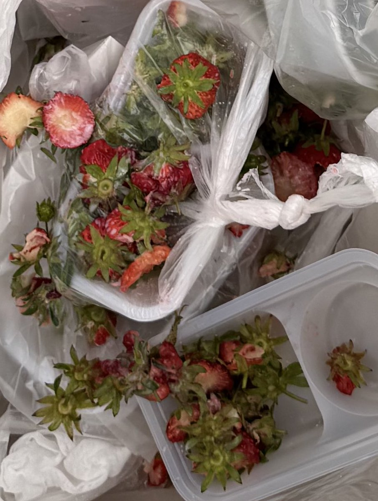

Minokakay （日雌泰补色诺
@Minokakay
如果日本人这都要管的话外国游客就不要去日本消费为日本经济做贡献了。

うえはた のりひろ 神戸市会議員（東灘区）
@NorihiroUehata
今年も神戸はいちご狩りシーズン🍓
しかし悲しいことも
集団で来た中国人観光客が甘い部分だけを食べて捨てるを繰り返す行為
何より中国人は民間人も国防動員法の義務を負いリスクがあります。
私は台湾など法治国家で親日国の方々は歓迎しますが治安維持に悪影響を及ぼす中国人🇨🇳は一切拒絶する！ https://t.co/MkHOJnpbjX